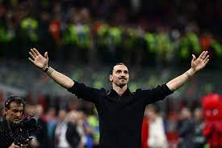

Después de anunciar que no renovaría con el PSG, los clubes de la liga saudi empezaron a acercarse a Sergio Ramos en las ultimas semanas.
Ramos decidira su futuro pronto con su familia. Todavía está abierto.
El retiro de una leyenda: Zlatan Ibrahimovic

Después de 27 temporadas en la elite, el delantero sueco anunció su retirada del futbol tras el partido diputado por el AC Milan contra el Verona.
Con una temporada accidentada, debido a su problema de rodilla, solamente pudo diputar 4 partidos. Entre lagrimas decidio poner punto y final a su historia en el futbol profesional.
Zlatan se ha caracterizado por sus goles y por coleccionar títulos, aunque siempre a nivel nacional. Conquistó cuatro campeonatos de liga en Francia con el PSG y cuatro Scudetto en sus etapas en Inter y Milan, otro campeonato de liga en su corta pero intensa etapa en el Barça y dos Eredivisie en sus inicios con el Ajax.
Siempre se le resistió la Champions League, torneo que le apartó de pelear por premios individuales más ambiciosos.
Se acabo Laliga Santander!
Luego de 38 jornadas, se definieron oficialmente las posiciones, asi como también se definio el ultimo equipo que descenderán a segunda división (o a laliga SmartBank).
Descendiendo el Vallalodid, acompañado del Espanyol y del Elche. Mientras que El Barcelona, Real Madrid, Atletico, Real Sociedad y Sevilla Jugarán Champions League.
Mientras que Villareal y Betis diputaran la Europa League, y el osasuna jugara Conference League.